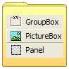

Code Index
The main VB Code section in the site. Here you'll find all of the vbAccelerator controls and libraries (with full source) and some utilities to make your programming life easier.
|  | ControlsvbAccelerator Explorer Bar Control Last Updated: 16 April 2004 |
 | LibrariesLast Updated: 12 June 2004 |
vbMediaLast Updated: 12 June 2004 | |
TechniquesFinding Which DLL Contains an API Call Dealing with Circular References Last Updated: 3 February 2003 | |